上一讲我们讨论了二维对称性问题，给出了下述各种完整列表：（i）齐次正交变换的所有正交不等价有限群列表；（ii）具有不变点阵的所有这种群的列表；（iii）所有系数为整数的齐次变换幺模不等价有限群列表；（iv）所有只包含整数坐标平移的非齐次线性变换的幺模不等价不连续群列表。
列表（i）即莱昂纳多列表：
Cn，Dn（n=1，2，3，……）
将该表中的角标n的值限制为n=1，2，3，4，6，便得到列表（ii）。这四个列表里的群数目hi、hii、hiii、hiv分别为
∞，10，13，17
毫无疑问，问题（iii）是最重要的。已经有人对一维直线而非二维平面提出过这四个问题，答案很简单，hi、hii、hiii、hiv均等于2。实际上对于（i）（ii）（iii）来说，相应的群要么仅由恒等变换x'=x构成，要么由恒等变换和反射x'=-x构成。
不过，我们现在要做的并不是从二维降到一维，而是从二维升至三维。在第二讲末尾我们已列出了三维情形的所有有限旋转群；这里，我们再回忆一下。
表A：
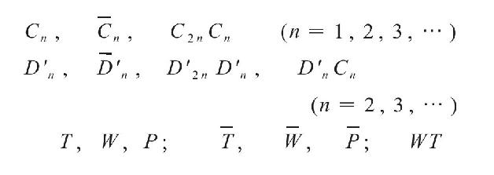
如果要求群的操作是点阵不变的，则只有重数为2、3、4、6的旋转轴才满足要求。有了这一限制，表A就变成了
表B：
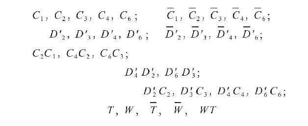
其中一共有32个成员。很容易证明，这32个群中的每一个都拥有不变点阵。在三维情况下，hi、hii、hiii、hiv的值分别为：
∞，32，70，230
用代数工具来处理的话，我们的问题就不必局限于二维或三维情形，可以推广至任意m个变量x1，x2，……，xm，相应的有限性定理（theorems of finiteness）已经得到了证明。这些方法极具数学价值。“度量加点阵”是二次型算术理论的基础，而高斯开创的该理论在整个19世纪的数论中发挥着中心作用。狄利克雷（Dirichlet）、埃尔米特（Hermite）以及更近一些的闵可夫斯基（Minkowski）和西格尔（Siegel），均对这方面的研究做出了各自的贡献。正是基于他们所取得的成就，以及所谓的代数或超复数系统（hypercomplex number system）的更精细算术理论，m维空间装饰对称性研究才得以进行。上一代的代数学家，比如美国的迪克森（L.Dickson），就在超复数系统研究方面做了大量工作。
我们用平面装饰物来装饰表面。艺术从未走进立体装饰，自然界中却存在着立体装饰。晶体中原子的排列就属于立体装饰。表面为平面的晶体的几何形式是自然界一种迷人的现象。然而，晶体的真正物理对称性更多地由晶态物质的内部物理结构所揭示，而不是由其外观所表现。设想晶态物质充满整个空间。晶体的宏观对称性可用旋转群Γ来表示。只有在群中旋转的作用下转换为彼此时，晶体在空间中的取向才是物理上不可区分的。譬如说，光在晶态介质中沿不同方向的传播速度通常是不同的，沿在群Γ中旋转的作用下可转换为彼此的方向的传播速度却相同。所有其他的物理性质亦如此。对于各向同性介质来说，群Γ包含所有的旋转，但对于晶体来说，Γ只包含有限个旋转，有时甚至只包含恒等变换。在晶体学史早期，人们从晶体的平面表面的排列出发导出了有理指数定律（the law of rational indices）。由此产生了晶体具有点阵状原子结构的假说，解释了有理指数定律的这一假说，并由劳厄（Laue）干涉图样完全证实，后者实质上就是晶体的X射线照相。更精确地说，该假说指出，使得晶体中的原子排列变换为自身的全等变换所构成的不连续群Δ，最多包含3个线性无关的平移。另外这一假说可以简化为更为简单的要求。在Δ中某个操作作用下位置互换的原子可以称为等价的。等价的原子构成一个规则的点集（pointset），这里指的是：点集在Δ中任一操作的作用下均变换为其自身，且对于点集里的任意两点来说，Δ中都存在一个操作能使二者相互转换。这里原子的排列指的是它们的平衡位置；实际上原子不停地在这些平衡位置附近振动。或许应该按照量子力学的说法，用原子的平均分布密度来代替精确位置：空间中的密度函数对于Δ的操作是不变的。Δ中那些全等变换的旋转部分构成的群Γ={Δ}使得点阵L保持不变，这里L是对原点O进行Δ中的平移操作所得到的点阵。表B列举的所得出的32种Γ的可能性，分别对应于晶体中存在的32种对称类。而如前所述，群Δ本身有230种可能性。[23]Γ={Δ}描述的是宏观上的空间和物理对称性，而Δ定义的是隐藏在后面的微观的原子对称性。大家或许都知道冯·劳厄（von Laue）晶体摄像的成功取决于什么。只有物体细节的尺寸远大于光的波长时，在这种光的照射下所形成的像才足够清晰，而尺寸更小的细节就不清晰了。普通光的波长大约是原子间距的1000倍；而X射线的波长正是劳厄所期望的10-8cm量级。这样劳厄就一箭双雕：既证实了晶体的点阵结构，又证明了X射线是短波光。在他得出该发现时的1912年，后者还只是尝试性的假说。即便如此，他的照片所显示的那些原子图样也不是通常意义上的照片：通过观察一条宽度仅为几个波长的狭缝，可以得到由干涉条纹组成的这一狭缝的像，只是多少有点扭曲。与之类似，这些劳厄照片也是原子点阵的干涉图样。人们可以根据这些照片计算出原子的实际排列，其尺度由照射的X射线的波长决定。图69和图70是两张闪锌矿的劳厄照片，均引自劳厄的论文（1912年）；二者拍摄所沿的方向分别能呈现出晶体阶数为4和3的绕轴对称性。在讲演中，我可以给大家看原子实际排列的各种（放大的）三维模型，而就本书而言，一张这类模型的图片（图71）想必已经足够了：这是化学成分为TiO2的锐钛矿的一小部分；浅色小球代表钛原子，深色小球代表氧原子。
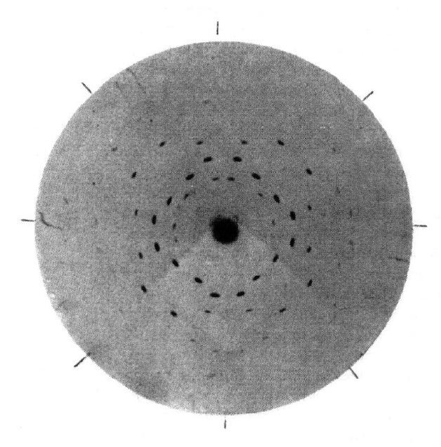
图69
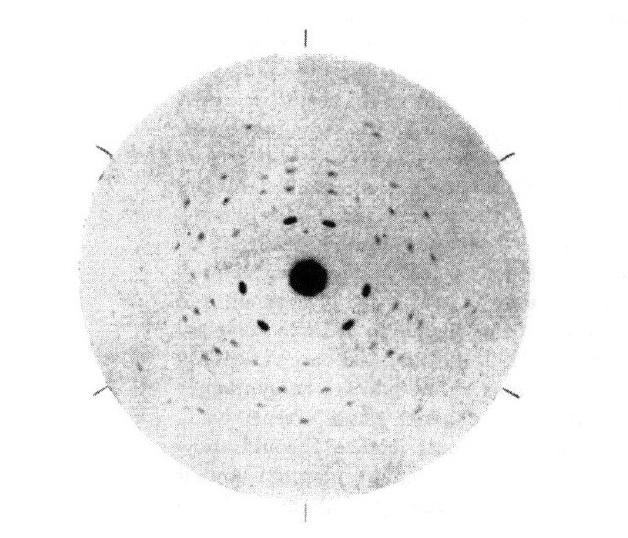
图70
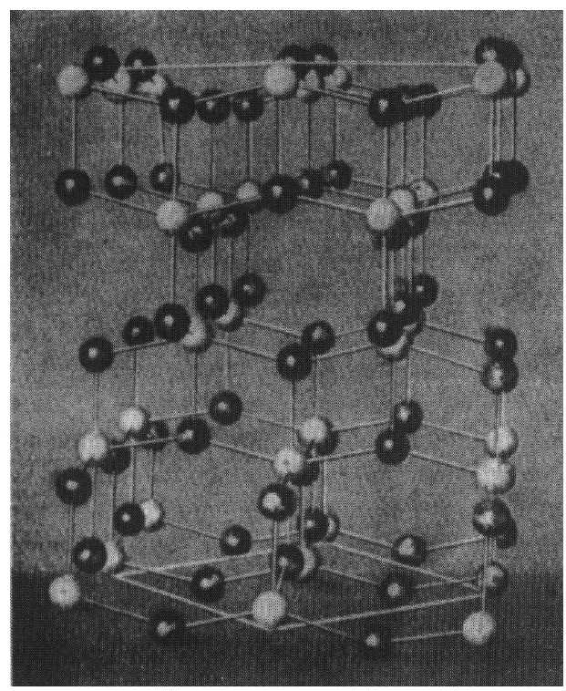
图71
尽管存在有损X射线照片质量的畸变，但是晶体的对称性还是充分展现了出来。这只是一个特例，而一般的原则是：如果唯一决定结果的条件具有某些对称性，则结果也具有相同的对称性。所以阿基米德曾推定，相同的重量在臂长相等的天平两端保持平衡。的确，整个系统相对于天平的正中面是对称的，所以不可能一端上扬一端下沉。基于同样的原因，可以确定掷完美立方体骰子时，每一面朝上的概率都相等，均为1/6。有时我们可以根据对称性就一些特殊的情形给出先验的预判，而一般情形，比如非等臂长天平的平衡定律，只能通过实验或根据基于实验的物理原理来确定。在我看来，物理学中所有先验性论述均有其对称性根源。
关于对称性，除了上述认识论方面的讨论，我还要再补充几句。现如今，晶体形态学定律是通过原子动力学来理解的：如果相同的原子彼此施加作用力，使得原子全体可能处于受限平衡状态，那么处于平衡状态的原子必然自动排列成规则点系。组成晶体的原子的性质决定了原子在给定的外界条件下的排列方式，而关于这些排列方式，纯粹的形态学研究列出了230种对称群Δ，不过仍有一片连续的范围没有覆盖。晶格的动力学也决定了晶体的物理行为，特别是晶体的生长方式，这又反过来决定了晶体在环境因素的影响下所具有的独特形状。所以自然界中存在的晶体呈现出各种各样的对称性，其形式之繁多让汉斯·卡斯托普在魔山上惊叹不已。[24]物体的可见特性通常是其组成成分和环境影响的共同结果。分子具有确定的化学组分的水，是呈固态、液态还是气态，由温度决定。温度就是环境因素。晶体学、化学和遗传学方面的实例，让人们不免猜想，生物学家称之为隐性和显性，或先天和后天的二象性，可能在某些方面与离散和连续之间的区别有关；我们已经看到，晶体的特征完全可以区分为离散的和连续的。但我并不否认，这一一般性的问题需要认识论方面的进一步澄清。
现在是时候结束关于装饰和晶体的几何对称性的讨论了。最后这一章的主要目的是说明对称性原理在远为重要的一些物理和数学问题上也发挥着作用，并且要从这些问题及前述对称性原理的应用出发，得出该原理的最终一般表述。
相对性理论与对称性的关系在第一章中已作过简要解释：在研究空间中的几何形状的对称性之前，必须研究空间自身在相同条件下所具有的结构。空无一物的空间具有高度对称性：每一点都一样，而且从某一点出发的所有方向都没有内在区别。我曾讲过，莱布尼茨曾就相似性的几何概念给出过哲学上的解释：相似，是指两个事物，如果就各自本身来考查的话，是不能区分的。因此，考虑同一平面上两个正方形之间的关系时，二者可能会显示出许多差异，比如，一个正方形的边可能相对于另一正方形的边倾斜34°。但就每一个正方形本身而言，就其中一个作出的任何客观陈述，对于另一个也同样成立；从这一意义上讲，两个正方形是不可区分的，因此是相似的。我将通过“竖直（vertical）”这个词的含义来说明客观陈述所必须满足的要求。与伊壁鸠鲁（Epicurus）相反，我们现代人并不认为“一条线是竖直的”是客观陈述，因为我们认为它是“该线与P点处的重力方向相同”这一更为完整的陈述的简略说法。于是，重力场就作为一个条件因素进入了该命题，而且还引入了我们手指所指的点P，这个单独呈现的点代表了诸如“我”“这里”“现在”和“这个”等限定条件。认识到我住的地方的重力方向和斯大林住的地方的重力方向是不同的，而且物质的重新分布也会导致重力方向发生改变后，伊壁鸠鲁的信念就破碎了。
对于客观性的分析，这里简要作个评论就够了，不需要再作更透彻的分析。具体说来，就几何而言，我们已经像亥姆霍兹那样把全等的客观关系视为空间中的一个基本客观关系。第二章开头我们谈到了全等变换群，它是所有相似变换构成的群的一个子群。在继续讨论之前，我想进一步澄清下这两个群之间的关系，因为存在长度的相对性这一令人不安的问题。
在通常的几何学中，长度是相对的：一幢大楼和它的模型是相似的；伸缩属于自同构。但是物理学已经揭示，在原子的构造，或者更确切地说，基本粒子（特别是具有确定电荷和质量的电子）的构造中，确立了一个绝对标准长度。利用原子发出的光谱线的波长，该原子的标准长度可用于实际测量。从自然界本身得出的这种绝对标准，要比保存在巴黎国际度量衡局保管库里的铂-铱米原器好得多。我认为实际的情况应该是这样的：相对于一个完备的参照系，不只是空间中的点，所有的物理量都能用数字确定下来。如果自然界所有普适的几何定律和物理定律在两个参照系中都具有同样的代数表达式，那么这两个参照系就是等效的。等效参照系之间的变换，就构成了物理自同构群；自然定律对于这个群的变换是不变的。事实上，群里的变换由该变换与空间点的坐标有关的那一部分唯一确定。于是，我们可以称之为空间的物理自同构。空间的物理自同构群并不包含伸缩，因为原子的特性确定了绝对长度；不过该群包含反射，因为没有哪个自然定律能指出左和右之间存在内在区别。因此，物理自同构群就由所有真的和非真的全等映射构成。如果空间中两个构形在该群的某个变换下变换为彼此，我们就称这两个构形是全等的，那么互为镜像的物体就是全等的。我认为有必要用全等的这一定义替代依赖于刚体运动的那个定义，其原因与物理学家用温度的热力学定义替代普通温度计定义类似。物理自同构群，也就是全等映射群确立后，就可以把几何学定义为讨论空间图形之全等关系的科学，于是 几何自同构指的就是把任意两个全等图形变换成全等图形的那些空间变换——我们不必像康德那样，为这种几何自同构群比物理自同构群更宽泛并且包含伸缩而感到惊奇。
上面的这些考虑都有一欠缺之处：它们忽视了物理事件不只发生在空间里，还发生在时空里；世界延展为一个四维而非三维连续体。这个四维环境的对称性、相对性或均匀性，是爱因斯坦最先作了正确描述。我们要问的问题是：“两个事件发生在同一位置”这一陈述是否具有客观意义？我们倾向于认为有；显然，如果这样认为，就是把位置理解为相对于我们生活在其上的地球的位置了。但我们能肯定地球是静止不动的吗？现在就连小孩子在学校里也会学到，地球具有自转，并在空间中运动。牛顿写了《自然哲学的数学原理》（Philosophiae naturalis principia mathematica）这部专著来回答这个问题，如他所说，要从物体之间的差别（即可观察的相对运动）和作用在物体上的力来推导出它们的绝对运动。然而，尽管他坚定地相信绝对空间，即相信“两个事件发生在同一位置”这一陈述的客观性，也只是把匀速直线运动（即所谓的一致平移）与所有其他运动客观地区分开来，却没能把质点的静止状态与所有其他可能的运动客观地区分开来。再者，“两个事件同时发生”（但不同地，譬如说一个在地球上，另一个在天狼星上）这一陈述是否具有客观意义？在爱因斯坦之前，人们的回答都是有。这种信念的基础显然在于，人们习惯于认为事件发生在他们观察到它的那个时刻。但是这种信念的基础早已被奥拉夫·雷默（Olaf Roemer）的发现推翻了，这一发现就是光是以有限的速度，而非瞬时传播的。这样人们就开始认识到，在四维时空连续体中，只有两个世界点的重合（“此时此地”）或紧邻关系，才具有直接可验证的意义。但是，把这个四维连续体分成同时性三维层和一维纤维空间中静止点的世界线的交叉纤维化之后，还能否描述世界结构的客观特征，就值得怀疑了。爱因斯坦所做的工作是，兼容并包地收集了所有关于四维时空连续体真实结构的所有物理证据，并由此推导出它真正的自同构群。这个群被称为洛伦兹群，以荷兰物理学家洛伦兹（H.A.Lorentz）的名字命名，他是爱因斯坦的施洗约翰，为相对论的诞生铺平了道路。根据这个群，人们证明了既不存在同时不变层，也不存在静止不变纤维。光锥（light cone），即能接收到从给定世界点O（“此时此地”）发出的光信号的所有世界点的集合，把世界分成将来和过去两部分，即我在O点所做的事所能影响到的部分和影响不到的部分。这意味着没有什么效应比光传播得更快，世界具有由各个世界点发出的光锥所描述的客观因果结构（objective causal structure）。这里我们不必写出洛伦兹变换（Lorentz transformations）表达式，并概述狭义相对论（special relativity）及其固定的因果和惯性结构是如何让位于这些结构随与物质的相互作用而变化的广义相对论（general relativity）的，[25]我只想指出，相对论讨论的正是空间和时间四维连续体的内在对称性。
我们发现，客观性（objectivity）即意味着相对于这个自同构群的不变性。实际的自同构群到底是什么，现实世界可能给不了明确的回答，出于某些研究的目的，可能会用更宽泛的群来代替自同构群。比如在平面几何中，我们可能只对在平行投影或中心投影下保持不变的那些关系感兴趣；这就是仿射几何和投影几何的起源。对于给定的变换群，如何找出它的不变要素（不变关系、不变量等等）？提出这一普遍性问题，并对于比较重要的特殊群解决这一问题（不管这些群是否是自然规律决定的某种领域的自同构群），数学家由此对所有可能遇到的情况预先做好准备。这就是菲利克斯·克莱因（Felix Klein）抽象意义上的所谓的“一种几何学”。克莱因说，一种几何学由一个变换群定义，研究的是在这一给定群的变换下保持不变的一切。谈及对称性，人们是对于整个群的某个子群γ来说的，我们应该特别关注有限子群。一个图形，亦即一个点集，如果在该子群γ的变换下变为自身，那么它就具有由γ定义的那种特殊对称性。
相对论和量子力学的创建，是20世纪物理学上的两大事件。量子力学与对称性之间是否也存在着某种关联？确实存在。对称性在原子光谱和分子光谱的排序中起着重要作用，而量子物理学原理提供了理解这些光谱的钥匙。在量子物理学取得首次成功之前，人们已汇集了有关光谱线及其波长和排列的规律性的大量实验资料；这一成功是指推导出了氢原子光谱的所谓巴耳末线系（Balmer series）定律，并指出了这一定律中特征常量与电子的电荷、质量，以及著名的普朗克常量h之间的关系。从那时起，对光谱的解释就伴随着量子物理学的发展而发展；那些关键的新特征，比如电子自旋和奇怪的泡利（Pauli）不相容原理（exclusion principle），就是这样发现的。后来的结果表明，这些基础奠定之后，对称性将大大有助于阐明光谱的一般特征。
近似说来，原子是一群电子，譬如说n个，绕固定在O点的原子核运动。之所以用“近似”这个词，是因为“原子核是固定的”这一假定并不严格成立，这甚至比把太阳当作太阳系的固定中心来处理更不恰当。因为太阳的质量是像地球这样的单个行星的300000倍，而作为氢原子核的质子，其质量却不到电子的2000倍。尽管如此，这仍是一个很好的近似！为了区分这n个电子，我们给它们加上标号1，2，……，n；支配它们运动的定律考查的是它们在以O为原点的笛卡儿坐标系中的位置坐标P1，P2，……，Pn。这里对称性的主要含义有两个方面：首先，从一个笛卡儿坐标系变换到另一个笛卡儿坐标系时必然有不变性，这种对称性来自空间的旋转对称性，且由关于O点的几何旋转群来表示；其次，所有的电子都相同，用1，2，……，n这些标号来区分只是赋予它们不同的名字，并不是说它们性质有什么不同：通过电子的任意置换可以变换为彼此的两个电子系统是不可区分的。置换指的是标号的重新排列，它实际上是一组标号（1，2，……，n）到其自身的一对一映射，如果你愿意的话，也可以说是相应的点集（P1，P2，……，Pn）到其自身的一对一映射。因此，比如，在n=5的情况下，用点P3，P5，P2，P1，P4代换点P1，P2，P3，P4，P5（即1→3，2→5，3→2，4→1，5→4的置换）的话，物理定律必然不受影响。这些置换构成了一个阶数为n！=1×2×……×n的群，第二类对称性就由该置换群来表示。在量子力学中，我们用多维空间（实际上是无限维空间）中的向量来表示物理系统的状态。如果电子系统的两个态能通过该系统的一个虚拟旋转或置换变换为彼此，则它们是通过一个与该旋转或该置换相关的线性变换联系起来的。于是，群论中意义最为深刻、最为系统的部分，即用线性变换来表示群的理论，就发挥了作用。这是一个难度较大的题目，我必须就此打住，不能再细说了。不过，这里证明了，对称性再次为研究一个内容丰富且非常重要的领域提供了线索。
我从艺术、生物学、晶体学和物理学谈起，最终落到数学上来。数学要着重讨论一下，因为一些基本概念，特别是群的基本概念，最初就是从数学上的应用，特别是代数方程理论方面的应用发展起来的。代数学家是与数字打交道的，但他们所能进行的运算只有加、减、乘、除这四种。从0和1出发，通过这四种运算得到的数是有理数。这些数构成的数域F对于这四种运算是封闭的，即两个有理数的和、差、积仍是有理数，而除数不为0的商也是有理数。这样一来，如果几何学和物理学没有提出解析连续性并把有理数嵌入连续的实数中的迫切要求，代数学家就没有理由踏出数域F。当古希腊人发现正方形的对角线与边长不可通约的时候，就第一次出现了这种需要。其后不久，欧多克索斯（Eudoxus）总结了构建适用于所有测量的实数系统的基础原则。后来在文艺复兴时期，代数方程的求解问题导致了具有实分量（a，b）的复数a+bi的引入。当人们认识到复数只不过是普通的实数组（a，b），只是其加法和乘法的定义使得算术中所熟知的定律均得以保持后，最初笼罩在复数及虚数单位i=
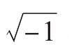
身上的神秘感就完全消失了。事实上，如下操作即可做到这一点：任何实数a均等同于复数（a，0）；i=（0，1）的平方i·i=i2等于-1，或者更明确点说，等于（-1，0）。这样一来，没有任何实数解的方程x2+1=0就变得可解了。19世纪初期，人们已证明引入复数后不仅这一方程变得可解，所有代数方程也可解。未定元为x的方程f（x）=xn+a1xn-1+a2xn-2+……+an-1x+an=0
（1）
不管次数n和系数av取何值，总有n个解，或者说有n个“根”：θ1，θ2，……，θn，使得多项式f（x）可以分解为n个因子：
f（x）=（x-θ1）（x-θ2）……（x-θn）
式中x是变量，或者说是未定元，方程则意味着等号两边的两个多项式的相应系数相等。
代数学家用加法和乘法运算在两个未定元x，y之间构建的这种关系式总是可以写成R（x，y）=0的形式，其中两个变量x，y的函数R（x，y）是一个多项式，即形式为
aμ，vxμyv（μ，v=0，1，2，……）
且系数aμ，v为有理数的单项式的有限和。这些关系在代数学家看来就是可解的“客观关系”。给定两个复数α，β，代数学家会问，存在什么样的系数为有理数的多项式R（x，y），当用α代替未定元x，用β代替未定元y时，多项式等于零。从两个复数出发可以推广至任意多个给定复数θ1，θ2，……，θn。代数学家会寻找这一数集Σ的自同构，亦即不会破坏它们的代数关系R（θ1，θ2，……，θn）=0的置换。这里R（x1，x1，……，xn）是n个未定元x1，x2，……，xn的任意有理系数多项式，用θ1，θ2，……，θn代替x1，x2，……，xn时，该多项式归于零。这些自同构构成了一个群，称为 伽罗瓦群（Galois group），以法国数学家埃瓦里斯特·伽罗瓦（Evariste Galois，1811—1832）的名字命名。如刚才所讲，伽罗瓦理论不过是对于集合Σ给出的相对性理论，由于离散性和有限性，这一集合在概念上远比相对论所讨论的空间或时空中的无限点集简单。当特别假定集合Σ中的元θ1，θ2，……，θn为具有有理系数av的n次代数方程（1）f（x）=0的n个根时，我们的讨论就完全没有脱离代数的限制。那么，讨论的就是方程f（x）=0的伽罗瓦群。要确定这个群可能很困难，因为需要研究满足某些条件的所有多项式R（x1，x2，……，xn）。但是，一旦确定了这个群，就能从它的结构中了解到许多关于求解此方程的标准步骤。伽罗瓦的思想在好几十年里一直被视为天书，不过后来对数学的整体发展产生了愈来愈深远的影响。这些思想都记录在他临终前夕交给友人的一封诀别信中。次日，他便在一次愚蠢的决斗中失去了生命，年仅21岁。这封信，如果从所包含的思想之新奇和影响之深远来讲，也许是人类知识宝库中最具价值的一份手稿。下面给出伽罗瓦理论的两个例子。
第一个例子取自古代。正方形的对角线与其边长之比为
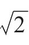
，这是由有理数系数二次方程x2-2=0
（2）
决定的。该方程的两个根分别为θ1=
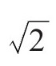
和θ2=-θ1=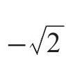
，即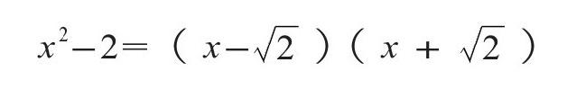
如上所述，它们是无理数。归功于毕达哥拉斯学派的这一发现给古代思想家留下了深刻印象，这一点从柏拉图《对话录》中的若干章节可以看出。正是这种洞见，迫使古希腊人用几何语言而不是代数语言来表达关于数量的一般原理。设R（x1，x2）是x1，x2的一个有理系数多项式，且当x1=θ1，x2=θ2时其值为零。现在的问题是，R（θ2，θ1）是否也为零。如果能够证明对于每一个R来说答案都是肯定的，那么对换（transposition）
θ1→θ2，θ2→θ1
（3）
就是一种自同构，与恒等映射θ1→θ2，θ2→θ1一样。其证明如下：单个未定元x的多项式R（x，-x）在x=θ1时等于零。将其除以（x2-2）
R（x，-x）=（x2-2）·Q（x）+（ax+b）
会得到系数a，b均为有理数的一次余式ax+b。用θ1代换x，所得的方程ax+b=0与θ1=
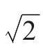
的无理数性质相矛盾，除非a=0且b=0。所以R（x，-x）=（x2-2）·Q（x）
从而有R（θ2，θ1）=R（θ2，-θ2）=0。因此，自同构群除恒等映射之外还包含对换（3）的事实，就等价于
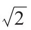
是无理数。另一个例子是高斯的正十七边形尺规作图法。他还是一个19岁的小伙子时就发明了这一作图法。当时他还在犹豫以后是从事古典文献学还是数学方面的研究，这一成功促使他做出了选择数学的最终决定。我们用具有实笛卡儿坐标（x，y）的点来表示任意的复数z=x+yi。代数方程
zp-1=0
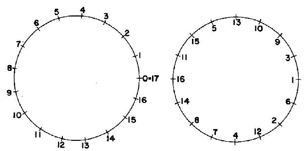
图72
有p个根，他们构成了一个正p边形的顶点。z=1是其中一个顶点，并且由于
zp-1=（z-1）·（zp-1+zp-2+……+z+1）
所以，其他顶点就是方程
zp-1+zp-2+……+z+1=0
（4）
的根。如果我们现在假定，p为素数，那么这（p-1）个根在代数学上就是不可区分的，而且它们的自同构群是一个（p-1）阶的循环群。先来讨论一下p=17的情况。图72中左侧的17点图显示了17个顶点，而右侧的16点图以一种神秘的循环排列方式展示了（4）式的16个根：拨动这个图形，即重复旋转整个圆周的1/16，则得到由16个根之间的置换给出的16个自同构。这个群C16显然有一个指数为2的子群C8；将图形旋转整个圆周的1/8，2/8，3/8，……即可得到后者。继续跳过间隔点，我们可以得到一条连续的子群链（⊃意为“包含”）：
C16⊃C8⊃C4⊃C2⊃C1
这条链始于完全群C16，终于仅由恒等置换构成的群C1，且链中每一个群都是包含在前一个群里的指数为2的子群。根据这一情况，可以通过4个相继二次方程构成的方程链来求解方程（4）的根。二次方程可用开平方法求解（苏美尔人已经知道这一点了）。因此，求解我们的问题，除加、减、乘、除等有理运算外，还需要四个相继的开平方运算。而这四种有理运算和开平方运算，正是那种能在几何上用尺规进行的代数运算。这就是可以用尺规作图法画出正三角形、正五边形和正十七边形（p=3，5，17）的原因；每一种情况下，相应的自同构群都是阶数（p-1）为2的幂的循环群：
3=21+1，5=22+1，17=24+1
有趣的是，虽然正十七边形的（外在的）几何对称性由一个阶数为17的循环群来描述，决定了它可由尺规作图法画出的（隐藏的）代数对称性却由一个阶数为16的循环群来描述。正七边形、正十一边形、正十三边形都不能用尺规作图法画出。
根据高斯的分析，仅当p为素数，且（p-1）是2的幂，即（p-1）=2n时，才可以通过尺规作图画出正p边形。然而，除非指数n也是2的幂，否则p=2n+1不可能是素数。设2v是可整除n的最大的2的幂，即n=2v·m，此处m为奇数。令
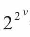
=a，则有2n+1=am+1。但是，对于奇数m来说，am+1能被a+1整除am+1=（a+1）（am-1-am-2+……-a+1）
所以这是一个可被a+1整除的合数，除非m=1。而3、5和17之后下一个形如2n+1且为素数的数是28+1=257。这确实是一个素数，所以正257边形也可以用尺规作图法画出。
伽罗瓦理论可以用一种稍有不同的形式来表达，我将通过方程（4）来说明。考虑所有形式为α=a+b
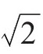
的数，其中a，b均为有理数，我们称它们为属于域{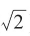
}的数。由于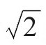
是无理数，当且仅当a=0，b=0时，此数才为0。因此有理数a，b就由α唯一确定，因为，如有a+b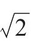
=a1+b1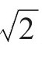
，则有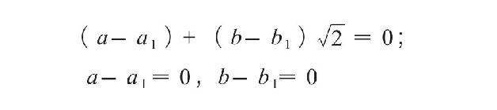
或a=a1，b=b1，只要a，a1和b，b1都是有理数。显然，这一域中的两个数相加、相减和相乘得到的数仍属于这个域；除法运算的结果也不出该域。原因如下：令α=a+b
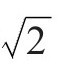
是该域中一个不等于零的数，其中a，b均为有理数；令α'=a-b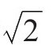
为其“共轭”。因为2并不是有理数的平方，所以所谓α的范（norm），即有理数αα'=a2-2b2不等于零，进而α的倒数也属于该域。因此域{
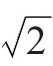
}关于加、减、乘、除（显然要排除除数为零的情况）四种运算是封闭的。我们现在来研究该域的自同构。一个自同构应是该域中数的一对一映射α→α*，使得对于该域中的任何α和β来说，该映射都将α+β和α·β分别映射为α*+β*和α*·β*。由此直接得出，自同构把每一个有理数变换为自身，把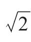
变换为满足方程ϑ2-2=0的数ϑ，即变换为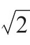
或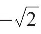
。因此，只有两种可能的自同构：一种是将域{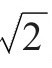
}中的每一个数α变换为它自身；另一种是将任意数α=a+b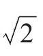
变换为它的共轭α'=a-b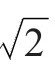
。显然，第二种操作是一个自同构，这样我们就确定了由域{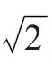
}的所有自同构构成的群。域或许是我们所能发明的最简单的代数结构。它的元素是一些数。其结构的典型特征是加法运算和乘法运算。这些运算满足某些公理，其中有些决定了加法有唯一的逆运算，称为减法，并决定乘法有唯一的逆运算（只要乘数不为零），称为除法。空间是另一例被赋予结构的实体，相应的元素是点，其结构是通过诸点之间的某些基本关系（比如，A,B，C在一条直线上，AB与CD全等，如此等等）建立起来的。我们从前述讨论中所得到的教益且确已成为现代数学中的指导原则的是： 分析赋予了结构的实体Σ时，一定要设法确定它的自同构群，也就是那些能使所有的结构关系保持不变的元素间的变换构成的群。这样就可望深入了解Σ的构造。然后可以开始研究元素的对称构形，即在由所有自同构构成的群的某一子群的变换下保持不变的构形。在寻找这类构形之前，可以先研究一下这些子群本身，亦即由保持一个元素固定不变，或保持两个不同的元素固定不变的自同构构成的子群，同时也研究一下存在哪些不连续子群或有限子群等等。
在研究由变换构成的群时，最好着重于研究纯粹的群结构。可通过如下方式进行：给群的元素加上任意标号，然后用群中任意两个元素s，t的标号来表示它们的复合u=st。如果群是有限的，则可以制作元素复合的表。这样得到的群概型（group scheme）或者说抽象群，本身就是一个结构实体，其结构由元素的复合律或复合表来表示：st=u。这样，我们兜兜转转又回到了起点，或许这已足够清楚地告诉我们，该就此止步了。事实上，我们可以问，对于给定的抽象群，其自同构所构成的群是什么？使得任意元素s，t分别变换为s'，t'的同时，st变换为s't'的群到自身的一对一映射s→s'是什么?
对称是一个很宽泛的课题，在艺术和自然界中均很重要。对称的根基处是数学；没有别的课题能更好地展示数学的智慧了。我尝试向你们介绍对称的众多类型，并引领你们从直观走向抽象，希望我没有完全失败。